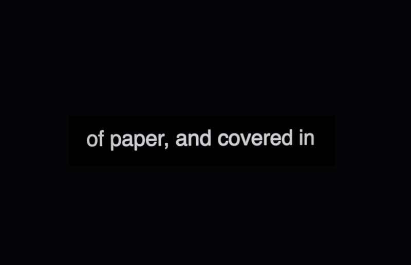

2017 — 2019
Installation and/or performance
16mm film (5.30 mins., colour, silent), 35mm slides
Las acciones duran is a process-based work that investigates the relationship between the body, the space of the page, and the act of inscription. The piece originated from a writing exercise conducted with Ric Allsopp at Azala, where the meticulous description of the act of writing is transformed into a physical choreography.
In the 16mm film projection, bare hands and feet trace geometric compositions with a red string over fresh earth, translating the calligraphy of the notebook onto the landscape. Simultaneously, a sequence of 35mm slides projects fragments of the original text, establishing a dialectic between the written word and material action. Whether presented as an installation or as a live performance, the work reflects on duration, the friction of thought upon paper, and the capacity of film to capture ephemeral gestures destined to vanish.
Presented at Light Field (San Francisco), Azala Espacio de Creación (Basque Country) and Summer Screening by Laborberlin (Berlín).